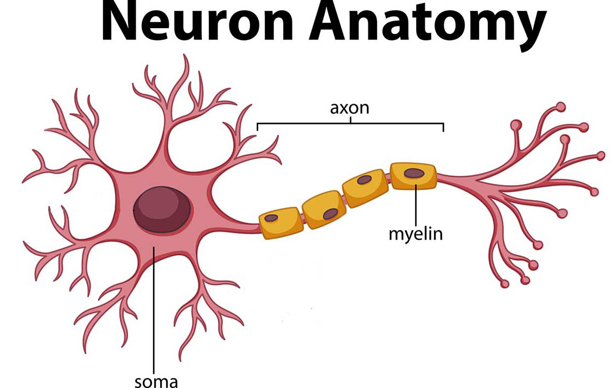

Jan 23rd, 2022 (jb tutorial)#
Motivation: Here I will describe in detail how to organize your projects using jupyter books. I have also prepared a template that you can use as a starting point (download link below).
Installation#
First we need to install a few things.
1) jupyer-book#
pip installation
pip3 install -U jupyter-book
Or if you use anaconda:
conda install -c conda-forge jupyter-book
2) jupyter notebook#
For this, you can just install JupyterLab which will eventually replace the classic jupyter notebook:
pip
pip3 install jupyterlab
anaconda:
conda install -c conda-forge jupyterlab
3) ghp-import#
Used to upload our book to GitHub.
pip3 install ghp-import
Making a book#
Simply copy your notebook or markdown files into organized directories and run the following command:
jupyter-book build [dir]
Here [dir] is the book directory. This will become clear below.
Organizing the book#
There are two yml files that you need to know about:
_toc.yml: Build a table of contents for the book._config.yml: Customize the book, title, logo, etc.
Check out the included template below to see how these work. In this example, I have two folders called nb for notebook and md for markdown updates. Whenever I make new progress, I usually add it to the nb folder, which is further organized by month.
Template#
Uploading to GitHub#
Let’s now go over how to host the book on GitHub.
First, log in to GitHub, then go to “create a new repository”. In this example I named it
jb-template.Navigate to a directory where you want to store the book and clone the repo. For example:
cd ~/Dropbox/git/
git clone https://github.com/hadivafaii/jb-template.git
Unzip and copy the content of
template.zipinside the empty/jb-templatedirectory.Now we define aliases for building and pushing the book. Makes it a lot easier. Open
.bashrcusing your favorite text editor and add the two alias lines, save, and close. Then reload.bashrcto apply these changes. Here are the steps:
nano ~/.bashrc
alias jb_build='jupyter-book build $HOME/Dropbox/git/jb-template/; rsync -ar $HOME/Dropbox/git/jb-template/_extras $HOME/Dropbox/git/jb-template/_build/html/'
alias jb_push='cd $HOME/Dropbox/git/jb-template; ghp-import -n -p -f _build/html'
source ~/.bashrc
That’s it! Now you can add new notebooks to the project and publish the updates which makes them available online. To do this, simply edit _toc.yml and add the notebook name there. Then run jb_build followed by jb_push to build and upload your book. After about 10-15 mins your book should be online. In this example, the URL is https://hadivafaii.github.io/jb-template
Uploading files#
You might wonder why I have included a folder called _extras in the project. This is to store small files such as PDFs or other files that I might want to include in my reports. For example, I have uploaded a jpg image in _extras that I can embed in markdown using simple HTML code.
Code:
<img src="../../_extras/neuron.jpg" title="This is a Neuron" alt="null" width="350"/>
Result:

You can embed other file formats such as videos, GIFs, HTML and so on. It’s pretty awesome.
Hiding code#
Sometimes we have a large chunk of code that reduces readability of the book. For instance:
import networkx as nx
from os.path import join as pjoin
from myterial import orange, blue_grey
from IPython.display import display, IFrame, HTML
from matplotlib.colors import rgb2hex, to_rgb
import matplotlib.pyplot as plt
import seaborn as sns
In the template, I have included another notebook called _tag.ipynb that you can use to hide code blocks. To do this, add a line # HIDE CODE on top of any cell that you want to hide and run _tag.ipynb.
For example, compare the two cells below. One of them has the # HIDE CODE tag, the other doesn’t. As a result, when I publish the book online you will see a little plus button that says “Click to show”. You can click on it to reveal the code content of the hidden cell.
Show code cell source
# HIDE CODE
# This cell will be hidden
import networkx as nx
from os.path import join as pjoin
from myterial import orange, blue_grey
from IPython.display import display, IFrame, HTML
from matplotlib.colors import rgb2hex, to_rgb
import matplotlib.pyplot as plt
import seaborn as sns
# This one will be visible
import networkx as nx
from os.path import join as pjoin
from myterial import orange, blue_grey
from IPython.display import display, IFrame, HTML
from matplotlib.colors import rgb2hex, to_rgb
import matplotlib.pyplot as plt
import seaborn as sns
Enjoy#
Let me know if something doesn’t work or you have any questions.